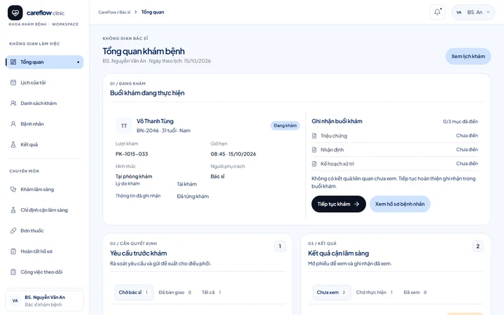
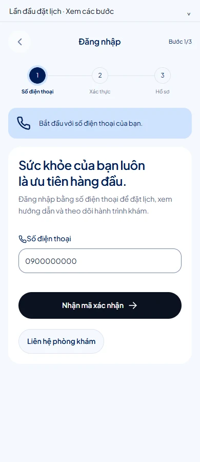

HEALTHCARE & WELLNESS
CareFlow
Guide patients through the next step while giving clinicians a clear view of the current visit and follow-up.

One journey, two points of view
A browser prototype follows a patient from entry and appointment booking through the care journey. A separate clinician workspace organizes the current visit and follow-up. My scope spans journey design, screen hierarchy and prototype implementation.
Make the next step visible
A patient needs to know what to do before the visit. A clinician needs to see what is in progress and what still needs attention. The two interfaces organize the same journey around different decisions.
Patient and clinician tasks
The patient flow is designed for narrow screens. The clinician workspace is designed around a desktop workflow. The prototype uses sample records and simulated actions.
Brief, scenario inventory and implementation
The repository records the patient-journey brief, an assumption log, component contracts and browser verification. Those artifacts support the prototype scope. They provide no evidence of clinical effectiveness.
Patient journey brief ↗ · Staff prototype guide ↗ · Browser QA workflows ↗
Organize by journey and by work queue
The patient side follows steps in the visit. The clinician side groups overview, schedule, visit detail, records, results and follow-up.
Booking and visit handling
Patient: enter the experience → choose the appointment path → review the resulting state. Clinician: open today’s work → select the current visit → inspect records and next steps.
Bring active work ahead of passive information
The clinician overview leads with the visit in progress and surfaces decisions and unread results before the rest of the schedule. The patient side keeps the immediate action near the explanation of the step.
Track changes in the design record
The source preserves the screen inventory, card audit and review notes. The current captures show the implemented UI.
Patient and clinician surfaces
The desktop cover shows clinician overview and follow-up. The image below shows the separate patient entry flow.

Two entry points
Open the patient entry to follow the appointment journey. Open the clinician workspace for current visits and follow-up.
Two surfaces with different priorities
The patient flow uses a narrow action-led layout. The desktop workspace keeps navigation, work summary and visit detail available together. Pending, confirmed and follow-up states are represented in the journey.
Browser and scenario evidence
The patient entry and clinician overview opened as distinct browser routes. The source includes separate QA workflows for patient and staff behavior. These checks cover prototype behavior.
Implemented scope and remaining evidence
The two surfaces demonstrate continuity across roles. Clinical protocols, service availability, authentication and live integration would need separate validation. A follow-up study should observe how patients identify the next step and how clinicians recover a handoff.